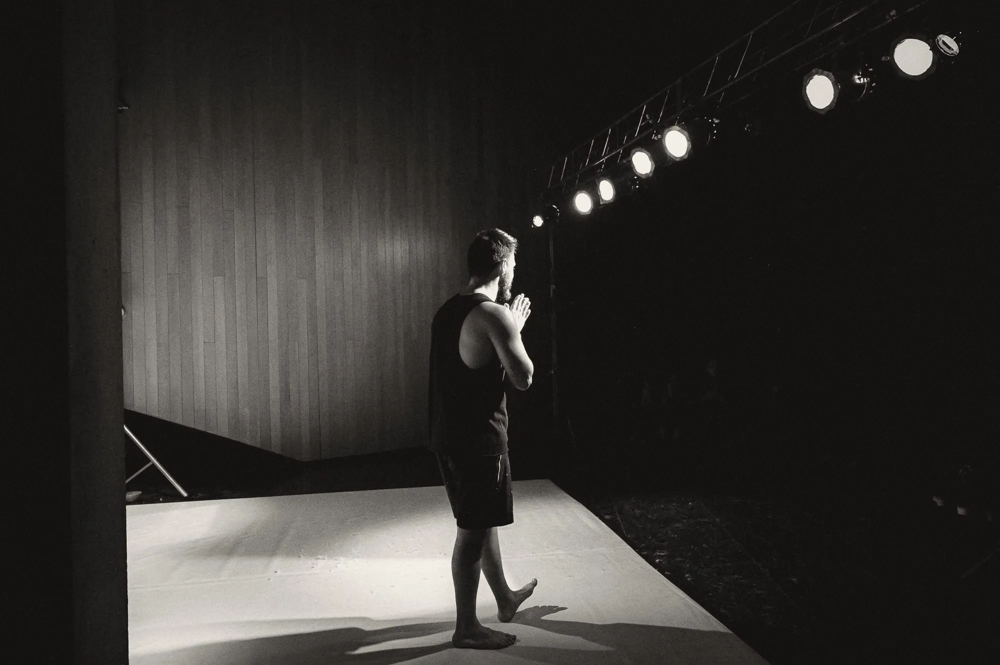
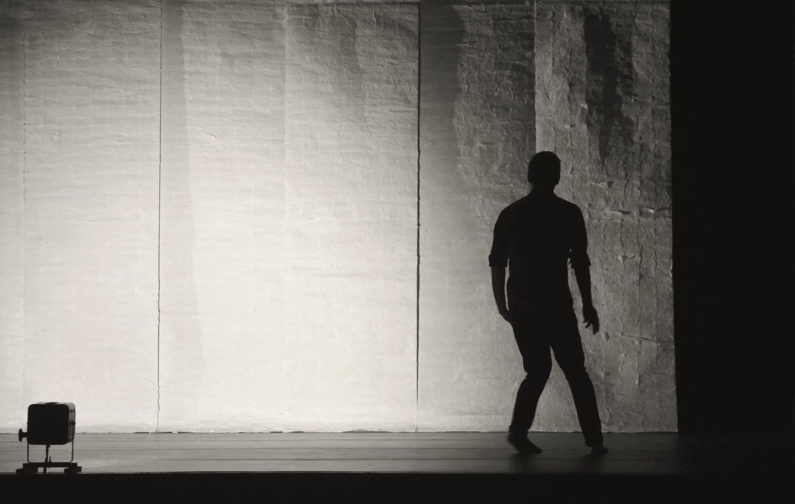

Entrar com som
Entrar em silêncio
Ir para o conteúdo
PT
ES
EN
Contato
A
a
Som
Índice
Início
Sobre
Criações cênicas
Encontros
Imagens
Textos e imprensa
Contato
Para programadores
ES
Español
EN
English
Estudos do presente
Marcus Moreno
Instante-já
· Foto Silvia Machado
Sempre mais que um
· Quadro do vídeo
Instante-já
· Foto Silvia Machado


A Imagem como Ausência
· Foto Silvia Machado
A Flor da Lua
· Casa das Caldeiras
Abrir no YouTube
Fechar